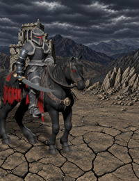
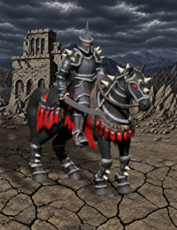
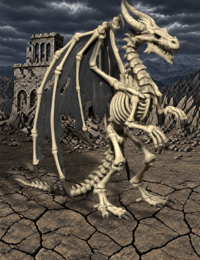
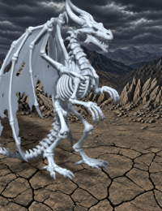

Necropolis mounted attack and panel correction 0.12.1 Attack poses · Panel registration · Both facings, offline
按固定画布离线合成，并非游戏截图。待机 4 fps，其余 8 fps，供审阅，不代表游戏速度。展示图使用游戏背景，动作视频使用灰底以便查看轮廓。
Fixed-canvas offline composites, not game captures. Holding: 4 fps; other clips: 8 fps for review, independently of runtime timing. Still showcases use the installed background; motion videos use gray for silhouette inspection.
Measurements · Validation
Black Knight 
MOVING · 8 frames MOUSEON · 11 frames HOLDING · 8 frames HITTED · 6 frames DEFENCE · 11 frames DEATH · 8 frames TURN_L · 3 frames TURN_R · 3 frames ATTACK_UP · 8 frames ATTACK_FRONT · 8 frames ATTACK_DOWN · 8 frames MOVE_START · 2 frames MOVE_END · 2 frames
Dread Knight 
MOVING · 8 frames MOUSEON · 11 frames HOLDING · 8 frames HITTED · 6 frames DEFENCE · 11 frames DEATH · 8 frames TURN_L · 3 frames TURN_R · 3 frames ATTACK_UP · 8 frames ATTACK_FRONT · 8 frames ATTACK_DOWN · 8 frames SPECIAL_UP · 11 frames SPECIAL_FRONT · 11 frames SPECIAL_DOWN · 11 frames MOVE_START · 2 frames MOVE_END · 2 frames
Bone Dragon 
MOVING · 6 frames MOUSEON · 5 frames HOLDING · 8 frames HITTED · 6 frames DEFENCE · 11 frames DEATH · 8 frames TURN_L · 3 frames TURN_R · 3 frames ATTACK_UP · 7 frames ATTACK_FRONT · 7 frames ATTACK_DOWN · 7 frames MOVE_START · 3 frames MOVE_END · 4 frames
Ghost Dragon 
MOVING · 6 frames MOUSEON · 9 frames HOLDING · 8 frames HITTED · 6 frames DEFENCE · 11 frames DEATH · 8 frames TURN_L · 3 frames TURN_R · 3 frames ATTACK_UP · 7 frames ATTACK_FRONT · 7 frames ATTACK_DOWN · 7 frames MOVE_START · 3 frames MOVE_END · 4 frames
{kind=link}